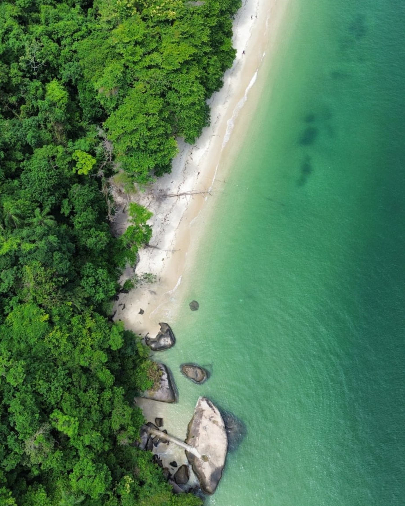
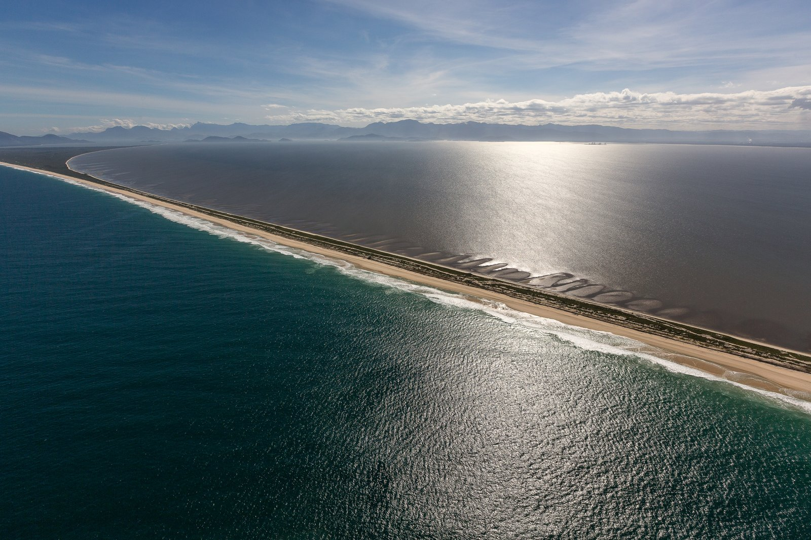
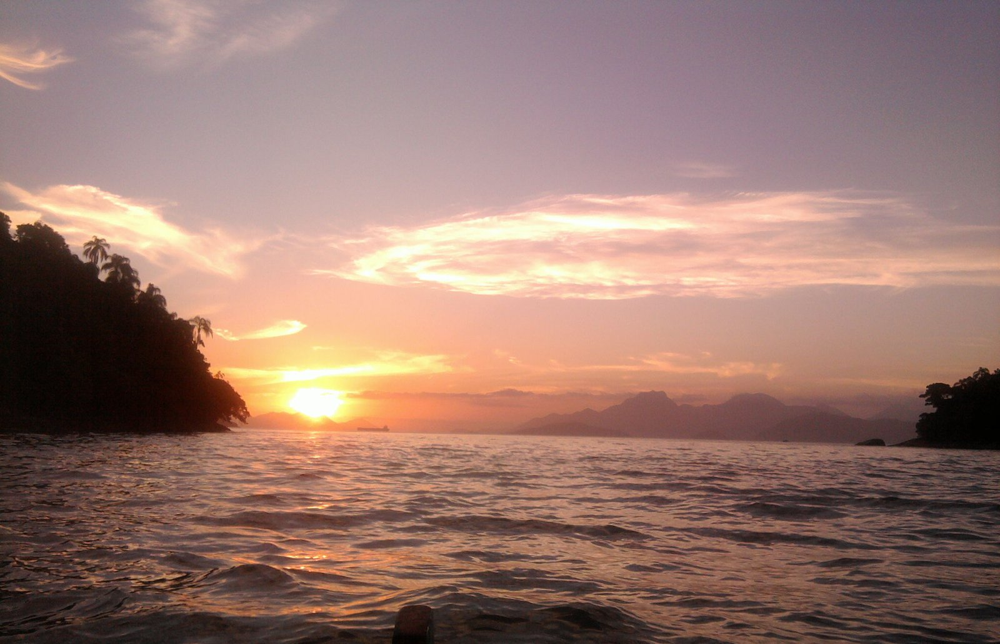
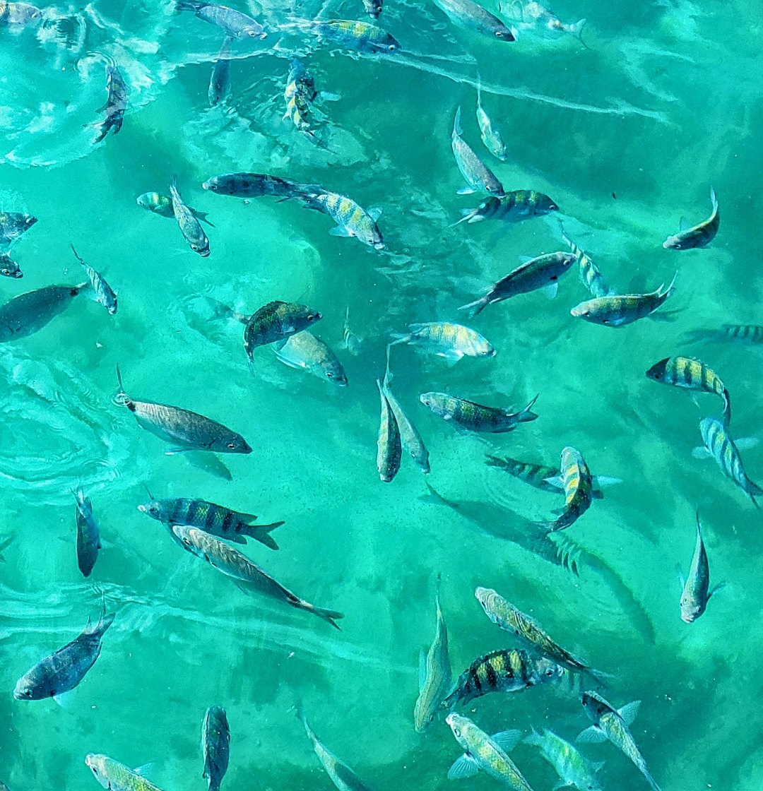

Mangaratiba


A embarcação é só do seu grupo: o roteiro, o ritmo e o clima do dia são seus.
No passeio privativo você aluga a embarcação para o seu grupo e monta o dia do seu jeito. É a opção para quem quer exclusividade: escolher o horário, ficar mais tempo onde gostar, colocar a sua música e embarcar no ponto mais conveniente para todos. Na lancha, ainda dá para fazer churrasco a bordo. Ideal para famílias, grupos de amigos, aniversários e confraternizações.
Você escolhe o roteiro e o tipo de embarcação (táxi boat ou lancha), e combinamos o dia e o horário. O valor é por embarcação, não por pessoa: quanto maior o grupo, melhor o custo por pessoa. A flexibilidade de horário e de paradas vale dentro das possibilidades do roteiro contratado e das condições do mar.
No privativo, a embarcação é só do seu grupo e o valor é por embarcação. Você tem mais flexibilidade de horário e de roteiro. No compartilhado, o valor é por pessoa, com horário e roteiro fixos.
Sim. Você pode escolher entre os roteiros Super Guaíba, Super Pombeba, Volta em Jaguanum ou combinar as ilhas no roteiro Ilhas de Mangaratiba (Ponta da Pombeba, Ilha Bonita, Jaguanum e Guaíba).
A partir de R$ 1.200 no táxi boat e R$ 1.600 na lancha, para até 12 pessoas. O valor final depende do roteiro, do embarque e da data. Faça sua cotação pelo WhatsApp.
De 4 a 6 horas, conforme o roteiro escolhido.
A lancha tem mais estrutura e conforto, e é a única embarcação que permite churrasco a bordo.
Sim, somente na lancha. Fornecemos churrasqueira e utensílios. Carne, carvão e demais itens são por conta do cliente.
Na lancha sim. No táxi boat é necessário confirmar com antecedência.
Sim, dentro das possibilidades do roteiro contratado e das condições do mar. Combinamos tudo na reserva.
Sim. Além do Centro de Mangaratiba e de Ibicuí, buscamos em Saí, Muriqui, Itacuruçá e outros pontos, com valor sob consulta.
O valor é por embarcação, e as crianças entram na contagem da lotação de 12 pessoas.
Me diga o roteiro, o dia, o número de pessoas, o ponto de embarque e o tipo de embarcação. Enviamos a cotação e confirmamos a reserva pelo WhatsApp.
Os mesmos roteiros dos passeios compartilhados servem de base para o seu privativo — com mais flexibilidade de horário e de paradas. Também é possível combinar as ilhas num roteiro só, sob medida para o seu grupo.

Um banco de areia banhado pelo mar dos dois lados — único no Rio de Janeiro.
Ver roteiro e valores
Praias abrigadas, boa estrutura e almoço garantido o ano todo.
Ver roteiro e valores
As principais ilhas de Mangaratiba num roteiro só: Ponta da Pombeba, Ilha Bonita, Ilha de Jaguanum e Ilha da Guaíba.
Cotar esse roteiro